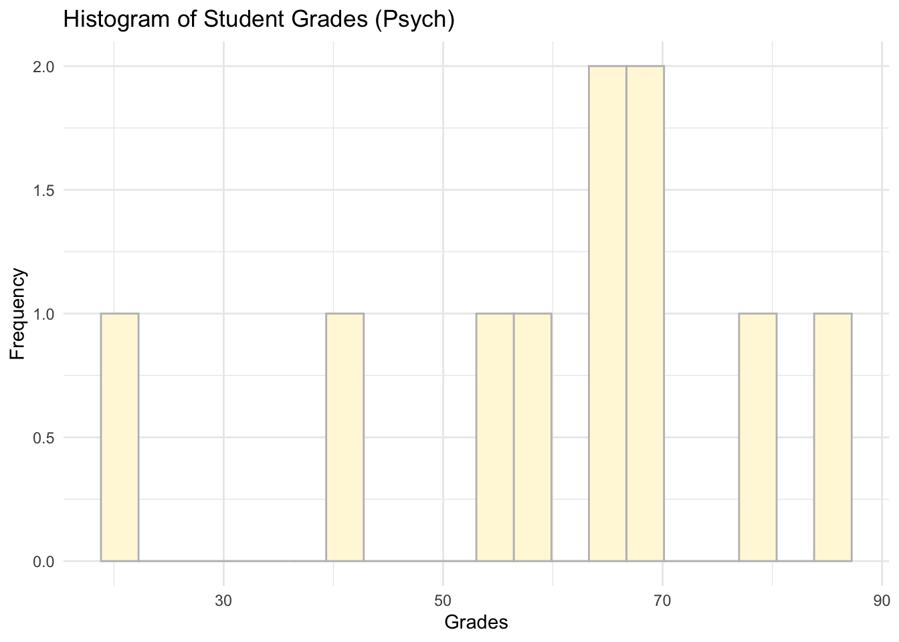
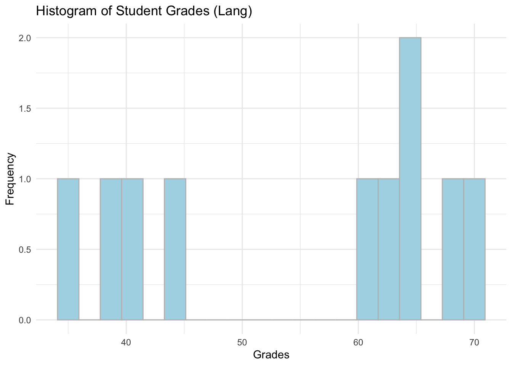
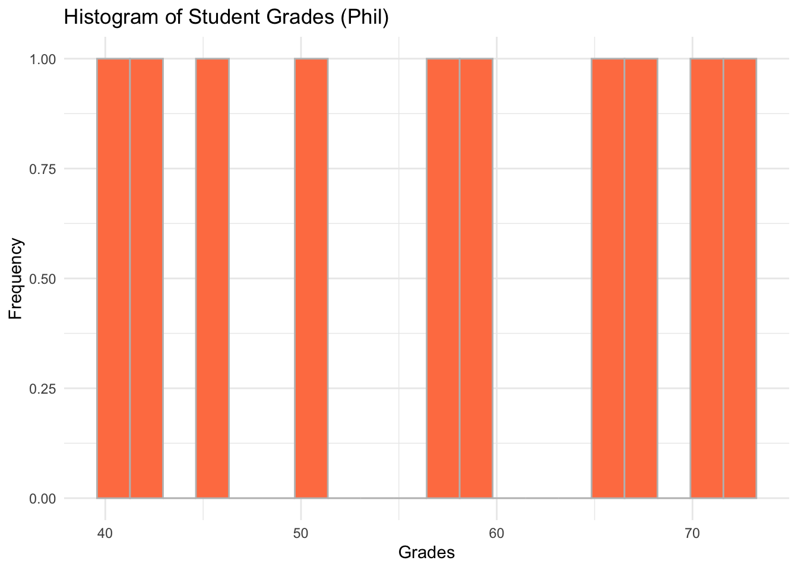

Chapter 8 Practice.Rmd Solutions
First, make sure that all the necessary packages are loaded:
library(tidyverse)
library(foreign)For your practice work with the same data as in the tutorial. You will need to use filter and arrange and also mutate to answer the questions below.
You are also required to provide some simple visualisations for your data to show what is happening in student grades by programme.
Here is the breakdown of the tasks we want you to do and the solutions:
- Read all three datasets in (data_students_1, data_students_2, data_students_3). Since they come in different formats make sure to check your notes from the tutorial. Note that you have data_students_3 in different formats so you can choose which one you want to read in. After you’ve read them in, check what’s inside of each dataset.
# Dataset 1
data_students_1 <- read.csv('data_students_1.csv')
head(data_students_1)## ID grades
## 1 ID1 20
## 2 ID2 35
## 3 ID3 45
## 4 ID4 85
## 5 ID5 70
## 6 ID6 72# Dataset 2
data_students_2 <- read.table("data_students_2.txt", header = TRUE)
head(data_students_2)## ID programme
## 1 ID1 psych
## 2 ID2 lang
## 3 ID3 phil
## 4 ID4 psych
## 5 ID5 lang
## 6 ID6 phil# Dataset 3
data_students_3 <- read.dta('data_students_3.dta')
head(data_students_3)## ID grades programme
## 1 ID16 40 psych
## 2 ID17 38 lang
## 3 ID18 50 phil
## 4 ID19 80 psych
## 5 ID20 69 lang
## 6 ID21 70 phil# Or
data_students_3 <- read.csv('data_students_3.csv')
head(data_students_3)## ID grades programme
## 1 ID16 40 psych
## 2 ID17 38 lang
## 3 ID18 50 phil
## 4 ID19 80 psych
## 5 ID20 69 lang
## 6 ID21 70 philNote that we have IDs 16-30 which means that we have got data for an extra 15 students. We can now add these to the other dataset we have. Let us first merge grades and programme for data_students_1 and data_students_2.
- Merge datasets together. First merge data_students_1 and data_students_2, then merge the resulting data with data_students_3. Hint: you will need to use full_join().
# Dataset 1 + Dataset 2
students_grades_prog <- full_join(data_students_1, data_students_2, by = c('ID')) # We can specify the unqiue variable we use to match the datasets via the 'by =' argument.# + Dataset 3
students_grades_prog_all <- full_join(students_grades_prog, data_students_3) # Please note that we do not need to specify a unique identifier here as we just want to match data by columns and R is clever enough to know what to do.
head(students_grades_prog_all)## ID grades programme
## 1 ID1 20 psych
## 2 ID2 35 lang
## 3 ID3 45 phil
## 4 ID4 85 psych
## 5 ID5 70 lang
## 6 ID6 72 philWork with the final dataset that has information on all students (30 observations).
Provide means, medians and standard deviations for grades in each programme.
students_grades_prog_all %>%
group_by(programme) %>%
summarise(mean = mean(grades),
median = median(grades),
sd = sd(grades))## # A tibble: 3 x 4
## programme mean median sd
## <fct> <dbl> <dbl> <dbl>
## 1 lang 54.7 61 13.8
## 2 phil 56.9 58.5 12.0
## 3 psych 61 65.5 19.1- Provide a simple visualisaiton for each programme.
# Psych
ggplot(data = subset(students_grades_prog_all, programme %in% c('psych')), aes(x = grades)) +
geom_histogram(bins = 20, color = 'grey', fill = 'cornsilk') +
labs(x = 'Grades', y = 'Frequency', title = 'Histogram of Student Grades (Psych)') +
theme_minimal()
# Lang
ggplot(data = subset(students_grades_prog_all, programme %in% c('lang')), aes(x = grades)) +
geom_histogram(bins = 20,color = 'grey', fill = 'lightblue') +
labs(x = 'Grades', y = 'Frequency', title = 'Histogram of Student Grades (Lang)') +
theme_minimal()
# Phil
ggplot(data = subset(students_grades_prog_all, programme %in% c('phil')), aes(x = grades)) +
geom_histogram(bins = 20, color = 'grey', fill = 'coral') +
labs(x = 'Grades', y = 'Frequency', title = 'Histogram of Student Grades (Phil)') +
theme_minimal()
Now, try to answer the following questions:
- How many students in the dataset received the grades above 70?
# Filter for grades above 70
students_grades_prog_all %>%
filter(grades > 70)## ID grades programme
## 1 ID4 85 psych
## 2 ID6 72 phil
## 3 ID19 80 psychThe answer is three.
- What is the mean and the median grade for those who go more than 65?
# Mean and median for grades above 70
students_grades_prog_all %>%
filter(grades > 65) %>%
summarise(mean_above_65 = mean(grades),
median_above_65 = median(grades))## mean_above_65 median_above_65
## 1 72 70The answer is 72 and 70.
- How many students received grades that were between 40 and 50 in philosophy programme?
# Phil grades between 40 and 50
students_grades_prog_all %>%
filter(programme == 'phil') %>%
filter(grades > 40 & grades < 50) # Note that we use '&' to specify that we want grades both less than 50 and more than 40.## ID grades programme
## 1 ID3 45 phil
## 2 ID30 42 philThere are two students.
- Considering only philosophy programme, what were the top three grades in the cohort?
# Only phil arranged
students_grades_prog_all %>%
filter(programme == 'phil') %>%
arrange(desc(grades))## ID grades programme
## 1 ID6 72 phil
## 2 ID21 70 phil
## 3 ID12 68 phil
## 4 ID27 65 phil
## 5 ID24 59 phil
## 6 ID9 58 phil
## 7 ID18 50 phil
## 8 ID3 45 phil
## 9 ID30 42 phil
## 10 ID15 40 philThe answer is 72, 70 and 68.
- Now, for language, what were the three lowest grades in the cohort?
# Only lang arranged
students_grades_prog_all %>%
filter(programme == 'lang') %>%
arrange(grades)## ID grades programme
## 1 ID2 35 lang
## 2 ID17 38 lang
## 3 ID26 40 lang
## 4 ID11 44 lang
## 5 ID8 60 lang
## 6 ID23 62 lang
## 7 ID14 64 lang
## 8 ID29 65 lang
## 9 ID20 69 lang
## 10 ID5 70 langIt should be 35, 38 and 40.
Well done. It may have taken a while to build all of these code chunks but it is an essential part of the practice to keep playing with the code we are showing you. Try to arrange things differently and see what happens.